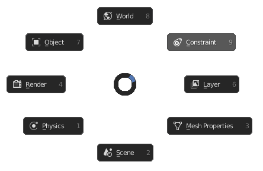

Properties Editor Menu
Hotkey: P
Functions / Table of Contents
World
Switches to a menu with popups for each section of world properties. This sub-menu contains the environment map selector, it requires a HDRI folder to be specified in the user preferences. Once specified, images will appear in the selectors' browser and when an image is selected the world settings are automatically updated.
Also see: Blender Manual
Constraint
Activates a popup for adding constraints to the object as well as quick-access functions. Add w/ Targets adds a constraint to the active object, then adds other selected objects as the constraint targets. This function is particularly useful as the eyedropper tool does not work in popups. Copy copies all constraints from the active object to other selected objects. Clear simply removes all constraints on the active object.
Also see: Blender Manual
Layer
Switches to a menu with popups for each section of layer and output properties.
Also see: Blender Manual
Scene
Switches to a menu with popups for each section of texture properties.
Also see: Blender Manual
Object Data
Switches to a different menu depending on the type of object that is selected. All menus refer to the selected objects' data properties. When a mesh object is selected, the particles properties can be accessed from this sub-menu.
Also see: Blender Manual
Physics
Activates a popup with the physics types available. When a physics type is added, the settings appear in the popup.
Also see: Blender Manual
Render
Switches to a menu with popups for each section of render properties. The render engine can be changed in the render popup.
Also see: Blender Manual
Object
Switches to a menu with popups for each section of object properties.
Also see: Blender Manual